本文看点
01
三层生态全链路风险
02
内容护栏挡不住物理风险
03
推理越强幻觉反而更高
01
TALK INFO
报告信息
【报告人】徐恪 教授（清华大学）
【会议】第一届 CCF 网络与系统安全大会，2026 年 8 月
【主题】大模型智能生态的全链路安全风险与防御体系
这是一篇会议现场的听会笔记，图片都是笔者在台下拍的幻灯片，内容按报告的推进顺序整理，重点放在"研究问题是怎么被提出来的"，而不是复述结论。
02
OVERVIEW
导读
这场报告最值得带走的，不是某一个攻击手法，而是它换了一个观察大模型安全的位置。现在讨论 AI 安全，默认视角往往是"模型这一层"：怎么越狱、怎么对齐、怎么防提示注入。徐恪教授的做法是把整个智能生态摊成一个系统：从芯片、操作系统、AI 中间件，到模型架构与训练推理算法，再到智能体、具身智能和上层应用，每一层都有自己的攻击面，而这三层的风险会互相灌进对方。
顺着这个视角，报告做了三件事：先给出智能生态的分层地图，再逐层剖析风险并提炼出一个统一的科学问题，最后给出一套三层协同的防御体系和已经落地的系统。下面按这个顺序讲，中间会重点展开三个我认为最有信息量的风险。
03
LANDSCAPE
先把地图铺开：智能生态是个三层系统
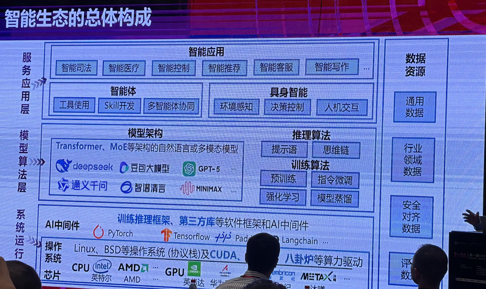
— 图1：报告开场的智能生态全景。纵向分三层，系统运行层是芯片、操作系统与协议栈、PyTorch/TensorFlow/LangChain 等 AI 中间件；模型算法层是 Transformer/MoE 架构与预训练、指令微调、强化学习、模型蒸馏等训练推理算法；服务应用层是智能体（工具使用、Skill 开发、多智能体协同）、具身智能和各类行业应用。右侧竖着一条数据资源，从通用数据、行业领域数据到安全对齐数据、评测数据，贯穿所有层
这张图值得多看两眼。它把"大模型"还原成了一条完整的技术栈：底下是芯片和操作系统，中间是训练推理框架和第三方库，上面才是模型，再上面是智能体和应用。
这个还原有个直接后果：大模型系统继承了它每一层依赖的全部历史包袱。你在 PyTorch、LangChain 这些中间件上跑模型，中间件的漏洞就是你的漏洞；你从公开仓库拉一个数据集或模型权重，供应链投毒就是你的风险。安全问题并没有因为换成了 AI 就重新出生一次，很多只是换了个宿主继续存在。
04
CASES
六起真实事故：风险不集中在任何一层
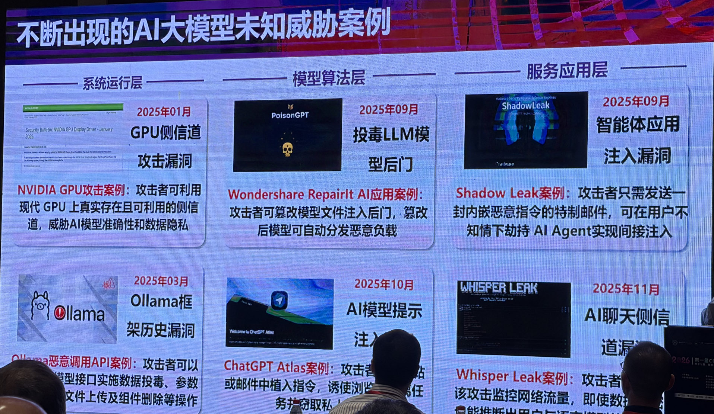
— 图2：报告列举的 2025 年 AI 大模型真实威胁案例，按三层分组。系统运行层：NVIDIA GPU 侧信道攻击漏洞（2025 年 01 月）、Ollama 框架历史漏洞被用于恶意调用 API 实施数据投毒与文件上传（2025 年 03 月）；模型算法层：Wondershare RepairIt 案例中攻击者篡改模型文件注入后门、篡改后的模型自动分发恶意负载（2025 年 09 月），ChatGPT Atlas 提示注入（2025 年 10 月）；服务应用层：ShadowLeak 只需一封内嵌恶意指令的特制邮件即可在用户不知情下劫持 AI Agent（2025 年 09 月），Whisper Leak 通过监控网络流量推断用户与模型的对话（2025 年 11 月）
六起事故摊在三层上，密度很均匀。这就是报告要的效果：风险不集中在任何一层，因此也不可能靠加固任何单独一层来解决。
其中两起特别值得从供应链的角度看。一是模型文件被篡改后注入后门，篡改后的模型还能自动分发恶意负载，这本质上就是把恶意包的传播模式套到了模型权重上，只不过分发单元从 npm 包变成了模型文件。二是 ShadowLeak：攻击者不需要碰你的模型，也不需要碰你的机器，只需要发一封邮件，邮件正文里嵌着给智能体看的指令，智能体在替用户读邮件时就被劫持了。攻击的入口从"你安装了什么"变成了"你的智能体读了什么"，而后者的攻击面比前者大得多，也难审计得多。
05
QUESTION
核心科学问题：预期语义和执行语义对不上
铺完风险，报告收束到一个统一的判断，我认为这是整场最有价值的一页：
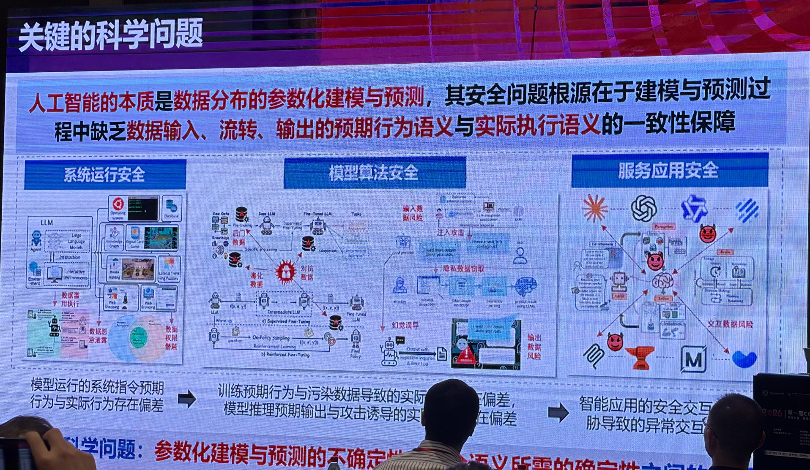
— 图3：报告提出的关键科学问题。上方结论：人工智能的本质是数据分布的参数化建模与预测，其安全问题根源在于建模与预测过程中缺乏数据输入、流转、输出的预期行为语义与实际执行语义的一致性保障。下方把这句话在三层上分别落地：系统运行安全对应"模型运行的系统指令预期行为与实际行为存在偏差"，模型算法安全对应"训练预期行为与污染数据导致的实际行为存在偏差、模型推理预期输出与攻击诱导的实际输出存在偏差"，服务应用安全对应智能应用的安全交互与威胁导致的异常交互
人工智能的本质是数据分布的参数化建模与预测，其安全问题的根源在于：建模与预测过程中，缺乏对数据输入、流转、输出的"预期行为语义"与"实际执行语义"的一致性保障。核心矛盾是参数化建模与预测的不确定性，和安全语义所需的确定性之间的矛盾。
这句话的分量在于它把三层看起来毫不相干的问题解释成了同一件事。数据投毒是训练时的预期行为与实际行为对不上；提示注入是推理时的预期输出与实际输出对不上；智能体被劫持是应用层的预期交互与实际交互对不上。传统软件安全之所以能做形式化验证、能做污点分析，前提是执行语义是确定的；而参数化模型的输出是一个分布，你没有办法对一个分布做"它一定不会执行某个动作"的断言。这就是为什么把传统的安全方法直接搬过来会失效，也是为什么这个方向需要新的技术路线。
06
RISKS
三个最值得记住的风险
风险剖析部分讲了很多，我挑三个最有信息量的展开。
第一个，代码依赖把传统供应链漏洞原样带进了 AI 栈。
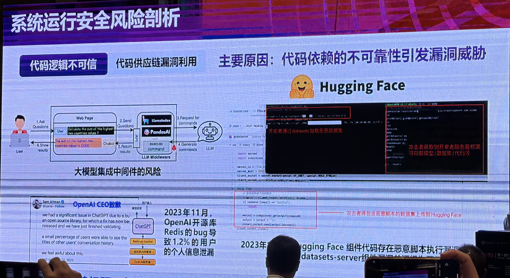
— 图4：系统运行层的"代码逻辑不可信"。左侧是大模型集成中间件的风险，用户提问经 Web 页面送到 LlamaIndex、PandasAI 这类中间件，中间件生成命令并执行，攻击者可借此让中间件执行非预期的命令；左下是 2023 年 OpenAI 因所用开源库 Redis 的 bug 导致约 1.2% 用户个人信息泄漏的事件；右侧是 Hugging Face 案例，攻击者把包含恶意脚本的数据集上传到平台，开发者通过 datasets 加载该数据集即被获取服务器权限，可窃取模型、数据集与代码
Hugging Face 那个例子的因果链非常清楚：攻击者上传一个带恶意脚本的数据集，开发者用一行标准的数据集加载调用把它拉下来，脚本在开发者机器上执行，攻击者拿到服务器权限，然后模型、数据集、代码全都在射程内。这条链上没有任何一步用到了"AI 特有"的技巧，它就是一次标准的恶意包投毒，只不过分发渠道从 PyPI 换成了模型托管平台。
所以呢？对做供应链安全的人来说，这意味着模型与数据集托管平台已经是一个需要按包仓库标准来治理的分发渠道：需要同样的恶意样本检测、同样的作者与来源验证、同样的加载时沙箱。它现在的治理成熟度，大致相当于十年前的语言包管理器。
第二个，也是最反直觉的一个：推理能力更强，幻觉反而更严重。
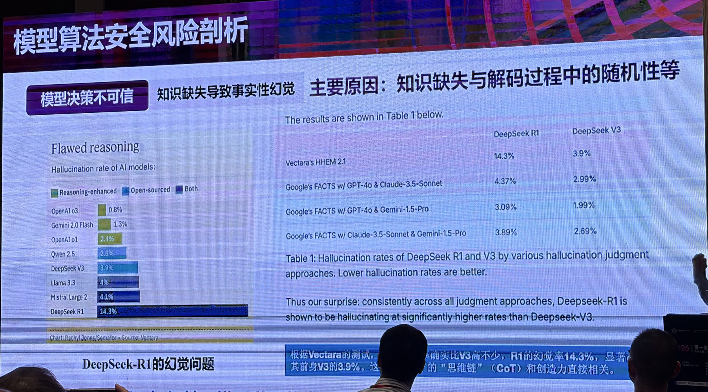
— 图5：模型算法层的幻觉问题。左侧柱状图是 Vectara 统计的各模型幻觉率，OpenAI o3 为 0.8%、Gemini 2.0 Flash 为 1.3%、DeepSeek V3 为 3.9%，而推理增强的 DeepSeek R1 高达 14.3%，排在最末；右侧是不同判定方法下 R1 与 V3 的对比，Vectara HHEM 2.1 下为 14.3% 对 3.9%，Google FACTS 的三种判定组合下分别为 4.37% 对 2.99%、3.09% 对 1.99%、3.89% 对 2.69%，结论是在所有判定方法下 R1 的幻觉率都显著高于 V3
这个对比之所以硬，是因为它控制住了变量：R1 和 V3 出自同一家、同一个基座，差别主要在推理增强这一项。结果是推理增强后的 R1 幻觉率 14.3%，接近它自己前身 V3 的四倍，而且这个结论在四种互相独立的幻觉判定方法下都成立，不是某一个评测器的偏见。
机制上，现场给的解释是幻觉率与模型生成的思维链长度、与创造力直接相关：模型被鼓励多想几步、想得更发散，就有更多机会在中间步骤里引入并放大一个错误事实。这里也有一层诚实的 nuance 值得留意，四种判定方法给出的绝对差距并不一致（HHEM 下差了 10 个百分点，FACTS 下只差 1 到 2 个百分点），所以"高多少"是有争议的，能确定的是方向：推理增强这件事，在事实性上是要付出代价的。
对从业者的意思很直接：不要默认"推理模型 = 更可靠的模型"。在需要事实准确的场景（检索问答、报告生成、代码依赖判断），推理增强可能是负资产，该配的检索约束和事实校验一个都不能省。
第三个，具身智能里的物理风险，现有内容安全护栏结构性地看不见。
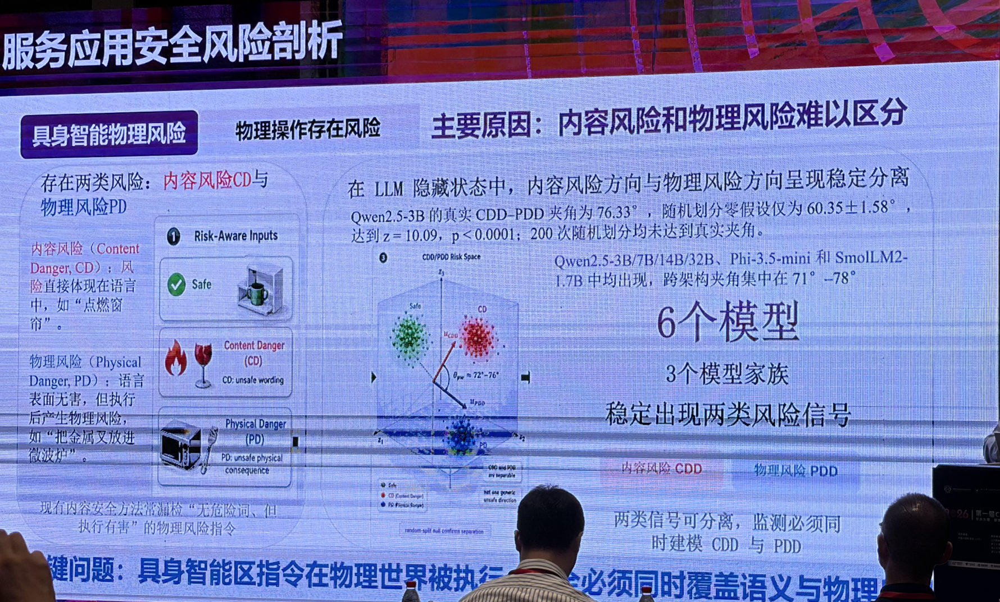
— 图6：服务应用层的具身智能物理风险。左侧区分两类风险：内容风险 CD（Content Danger）指风险直接体现在语言中，例如"点燃窗帘"；物理风险 PD（Physical Danger）指语言表面无害但执行后产生物理危害，例如"把金属叉放进微波炉"。右侧给出实验：在 LLM 隐藏状态中，内容风险方向与物理风险方向呈现稳定分离，Qwen2.5-3B 的真实 CDD-PDD 夹角为 76.33 度，而随机划分的零假设仅为 60.35 加减 1.58 度，达到 z = 10.09、p < 0.0001，200 次随机划分均未达到真实夹角；该现象在 Qwen2.5 的 3B/7B/14B/32B、Phi-3.5-mini 和 SmolLM2-1.7B 共 6 个模型、3 个模型家族中均出现，跨架构夹角集中在 71 到 78 度
先说清楚这两类风险的区别。"点燃窗帘"是内容风险，危险写在字面上，关键词过滤和内容审核模型都能拦。"把金属叉放进微波炉"是物理风险，这句话在语言层面完全无害，你把它扔给任何一个内容安全模型都会判成安全，但只要执行主体是一个能动手的机器人，它就会引发真实的火灾。
这项工作真正漂亮的地方在于它没有停在举例，而是去模型内部找了证据：把两类风险指令分别喂给模型，取隐藏状态，算出"内容风险方向"和"物理风险方向"两个向量，测它们的夹角。结果是 76.33 度，接近正交。
这个实验设计的关键是那个零假设对照。如果只报"夹角 76 度"，读者没法判断这算大还是算小，毕竟高维空间里随便两组向量本来就容易接近正交。作者的做法是把同一批数据随机划成两组再算夹角，得到 60.35 加减 1.58 度作为基线，真实夹角比这个基线高出 10 个标准差还多，200 次随机划分没有一次达到。这就排除了"高维空间的平凡正交"这个替代解释，坐实了两类风险在表征空间里确实是被模型分开编码的两个方向。而且它在 6 个模型、3 个模型家族上都复现了，说明这不是某个模型的偶然，是一个跨架构的普遍结构。
所以呢？结论很硬：现有的内容安全护栏只建模了其中一个方向，另一个方向上的风险它天然看不见。这不是"训练数据不够"能修的，是监测目标少了一维。要覆盖具身智能，安全监测必须同时对 CD 和 PD 两个方向建模。对正在把大模型接到机械臂、无人机、家用机器人上的团队，这一条应该直接写进设计约束。
07
DEFENSE
防御：三层协同，而不是给模型加个护栏
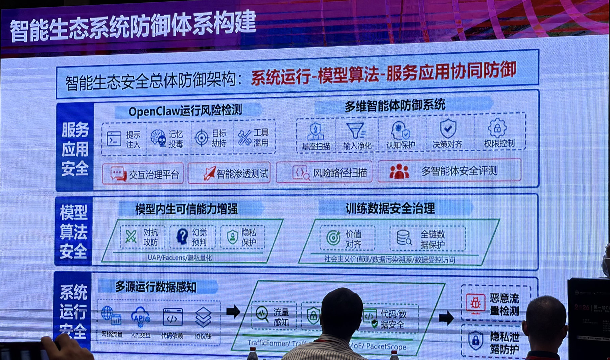
— 图7：报告给出的智能生态安全总体防御架构，系统运行、模型算法、服务应用三层协同。服务应用安全层包含 OpenClaw 运行风险检测（提示注入、记忆投毒、目标劫持、工具滥用）与多维智能体防御系统（基座扫描、输入净化、认知保护、决策对齐、权限控制），以及交互治理平台、智能渗透测试、风险路径扫描、多智能体安全评测；模型算法安全层包含模型内生可信能力增强（对抗攻防、幻觉预判、隐私保护，对应 UAP/FacLens/隐私量化）与训练数据安全治理（价值对齐、全链数据保护）；系统运行安全层是多源运行数据感知，从网络流量、API 交互、代码依赖、协议栈采集，经流量感知与代码数据安全分析，输出恶意流量检测与隐私泄露防护，底层技术为 TrafficFormer、TrafficLLM、MoE、PacketScope
防御体系和风险剖析是一一对应的：底层用流量、API、代码依赖、协议栈这些多源运行数据做感知；中层做模型内生的可信能力增强和训练数据治理；上层做智能体运行时的风险检测与权限控制。
这里有个取向值得注意。上层那一排能力（基座扫描、输入净化、认知保护、决策对齐、权限控制）没有一个是"让模型更聪明地拒绝"，全部是把安全决策从模型内部挪到模型外部的可控环节。这和前面那个科学问题是呼应的：既然参数化模型的输出天然不确定，那就别指望靠模型自己给出确定性保证，而是在它周围建立确定的检查点。
08
WORKS
落地的几件事
报告后半程过了一批具体系统，我挑三个和供应链、智能体安全最相关的。
PromptEcho：加密流量里的对话重建。
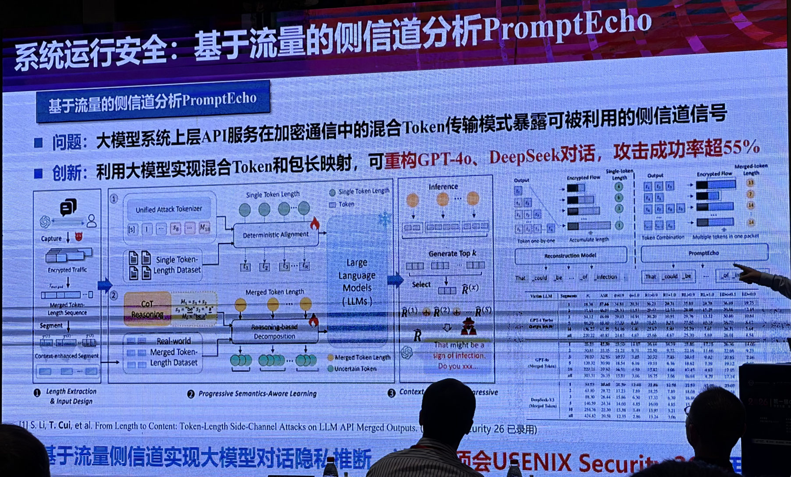
— 图8：系统运行安全方向的 PromptEcho。问题是大模型系统上层 API 服务在加密通信中的混合 Token 传输模式暴露了可被利用的侧信道信号；创新点是利用大模型实现混合 Token 与包长的映射，可重构 GPT-4o、DeepSeek 的对话，攻击成功率超过 55%。下方流程分三步：长度提取与输入设计、渐进式语义感知学习（含 CoT 推理分解）、上下文增强的自回归重构；右侧对比图说明厂商把多个 token 合并进一个数据包后，长度与 token 的一一对应被打破，PromptEcho 处理的正是这种合并情形
这项工作已被 USENIX Security 26 录用，本账号此前单独解读过（《厂商合并 token 想堵侧信道，反被从包长度重建对话》）。这里只补一句现场的强调：厂商合并 token 本来就是为了堵住早期那个"一个 token 一个包、包长直接泄露字符数"的侧信道，它是一个防御措施；而这项工作证明了合并之后长度信息并没有消失，只是变成了需要更强推理才能解开的形式。防御把攻击的门槛抬高了，但没有关上门。
风险路径检测与验证：从静态分析到自动出 PoC。
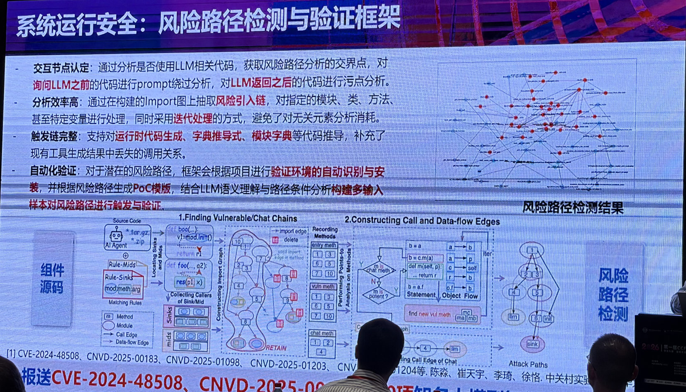
— 图9：系统运行安全方向的风险路径检测与验证框架。四条能力：交互节点认定，通过分析是否使用 LLM 相关代码获取风险路径分析的交界点，对询问 LLM 之前的代码做 prompt 绕过分析、对 LLM 返回之后的代码做污点分析；分析效率高，在构建的 Import 图上抽取风险引入链并迭代处理；触发链完整，支持运行时代码生成、字典推导式、模块字典等代码推导，补上现有工具丢失的调用关系；自动化验证，自动识别与安装验证环境，根据风险路径生成 PoC 模板并构建多输入样本触发验证。底部标注了报送的 CVE-2024-48508 与多个 CNVD 编号
这个框架的设计思路很值得做程序分析的人看：它把"LLM 调用点"当作静态分析的一个特殊边界来处理。在调用 LLM 之前的代码路径上做提示绕过分析，在 LLM 返回之后的代码路径上做污点分析，这样就把一个不可分析的黑盒变成了两段可分析的确定性代码。同时它专门去补 Python 里那些静态工具容易丢的调用关系（运行时代码生成、字典推导式、模块字典），因为智能体框架恰恰是这类动态特性的重度使用者，调用图缺一条边，整条风险路径就断了。
战果是实打实的：报送了 CVE-2024-48508 以及 CNVD-2025-00183、01098、01203、01204 等多个编号，累计在 20 项知名大模型智能体上发现高危漏洞。
玄甲 OS · AgentWard：把防护做成智能体的运行时。
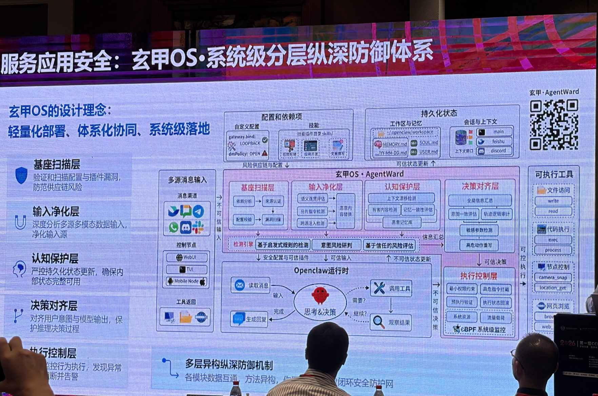
— 图10：服务应用安全方向的玄甲 OS 分层纵深防御体系，设计理念是轻量化部署、体系化协同、系统级落地。五层依次是基座扫描层（验证和扫描配置与插件漏洞，防范供应链风险）、输入净化层（深度分析多源多模态数据输入）、认知保护层（严控持久化状态更新，确保内部状态完整可用）、决策对齐层（对齐用户意图与模型输出）、执行控制层（管控行为执行，发现异常即阻断并告警）。中间是 Openclaw 运行时的读消息、思考决策、调用工具、观察结果循环，右侧是可执行工具清单（文件访问、代码执行、节点控制、网页浏览），执行控制层包含最小权限约束、高危指令扫描、预执行验证、执行状态回滚，并用 eBPF 做系统级监控
这一页和本账号长期跟的 Agent Skill 安全是同一条线。它把防护拆成五层挂在智能体的运行时循环上：读消息之前先扫基座和插件（这一层直接对应 Skill 供应链风险），输入进来先净化，持久化记忆的更新要严控（对应记忆投毒），决策产出要和用户意图对齐（对应目标劫持），最后在执行环节做最小权限约束、高危指令扫描、预执行验证和状态回滚。
值得注意的是最后那一层用了 eBPF 做系统级监控。这是个信号：智能体的安全边界正在从应用层往操作系统层沉。原因不难理解，智能体最终要落到文件读写、进程执行、网络请求这些系统调用上，在应用层拦"它想干什么"永远有绕过空间，在系统调用层看"它实际干了什么"才是确定的。这又一次呼应了那个科学问题：不确定的部分交给模型，确定的部分放到系统里去卡。
09
FUTURE
再往前一步：给安全模型一个世界观
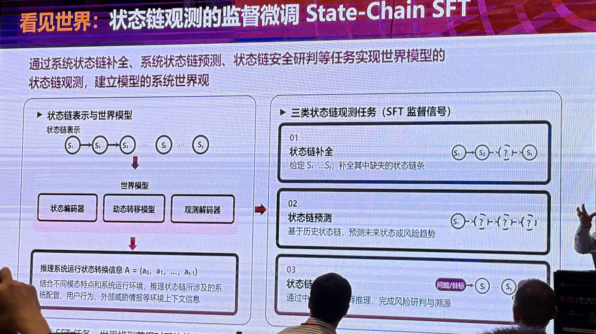
— 图11：报告最后的前瞻方向，状态链观测的监督微调 State-Chain SFT。左侧是状态链表示与世界模型：把系统运行状态表示成状态链 S1 到 St，用状态编码器、动态转移模型、观测解码器构成世界模型，推理出系统运行状态转换信息，结合系统配置、用户行为、外部威胁情报等环境上下文；右侧是三类状态链观测任务作为 SFT 监督信号：状态链补全（给定部分状态补全缺失链条）、状态链预测（基于历史状态链预测未来状态或风险趋势）、状态链安全研判（完成风险研判与溯源）
最后这部分是还在路上的想法：把网络流量、系统日志、安全告警、资产拓扑、性能指标这些多源数据在时间轴上对齐，融合成"状态链"，再让模型从状态链里学网络世界的运行规律，形成一个网络空间的世界模型。
它的三个监督任务设计得挺巧：补全（缺失的中间状态是什么）、预测（下一步会演化成什么）、研判（这条链上的风险从哪来）。这三件事恰好覆盖了安全运营里最耗人的三种判断。这个方向能不能成还不好说，数据对齐这一关就足够难，但它指向的问题是真的：现在的安全模型看到的是孤立的事件，看不到系统的状态演化，而攻击恰恰是一个状态演化的过程。
10
TAKEAWAYS
启发与点评
对研究者：这场报告的方法论价值大于任何单点结论。它示范了一件事，把一个庞杂的领域收束到一个可讨论的科学问题上，比罗列一百个攻击手法有用得多。"预期行为语义与实际执行语义的一致性"这个提法，给了很多看起来无关的问题一个共同坐标：数据投毒、提示注入、智能体劫持、具身智能误执行，都是这条一致性在不同环节上的断裂。选题时不妨照着这个框架找空白，哪个环节的一致性还完全没有度量手段，哪里就是坑位。另外具身智能那项工作的实验设计值得单独学：先提出"两类风险在表征空间可分离"的假设，再用随机划分零假设排除高维平凡解，最后跨 6 个模型 3 个家族验证普遍性，这套动作让一个直觉变成了可引用的结论。
对从业者：三条能立刻用的判断。其一，模型和数据集托管平台要按包仓库的标准来治理，Hugging Face 那条攻击链没有任何 AI 特有技巧，就是一次标准的恶意包投毒，你在 PyPI 上做的来源验证、加载沙箱、恶意样本扫描，一样都不能少。其二，别把推理模型当成更可靠的模型，R1 对 V3 的对比说明推理增强在事实性上是要付代价的，需要事实准确的场景该配的校验一个都不能省。其三，如果你的智能体能动手（调工具、控设备、执行代码），只做内容安全是不够的，物理风险和内容风险在模型内部就是两个方向，你的监测必须两个都覆盖，并且把最后一道卡点放到系统调用层。
一点观察：把这场报告放回供应链安全的脉络里看，它其实在说一件让人不太舒服的事：AI 并没有创造多少全新的安全问题，它更多是把旧问题搬进了一个审计难度高得多的新宿主。恶意包换成了恶意数据集，依赖混淆换成了插件与 Skill 的来源不明，权限过度授予换成了智能体的工具调用，命令注入换成了提示注入。技术形态变了，因果结构没变。这既是坏消息也是好消息：坏在旧账一笔没销，好在这个领域二十年攒下的方法论并没有作废，它需要的是被翻译到新的宿主上，而不是推倒重来。报告里那些落地系统（把 LLM 调用点当分析边界的静态分析、把防护挂在智能体运行时循环上的五层拦截、沉到 eBPF 的执行监控），做的正是这件翻译工作。